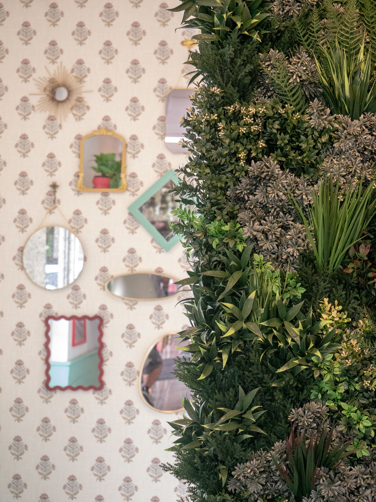
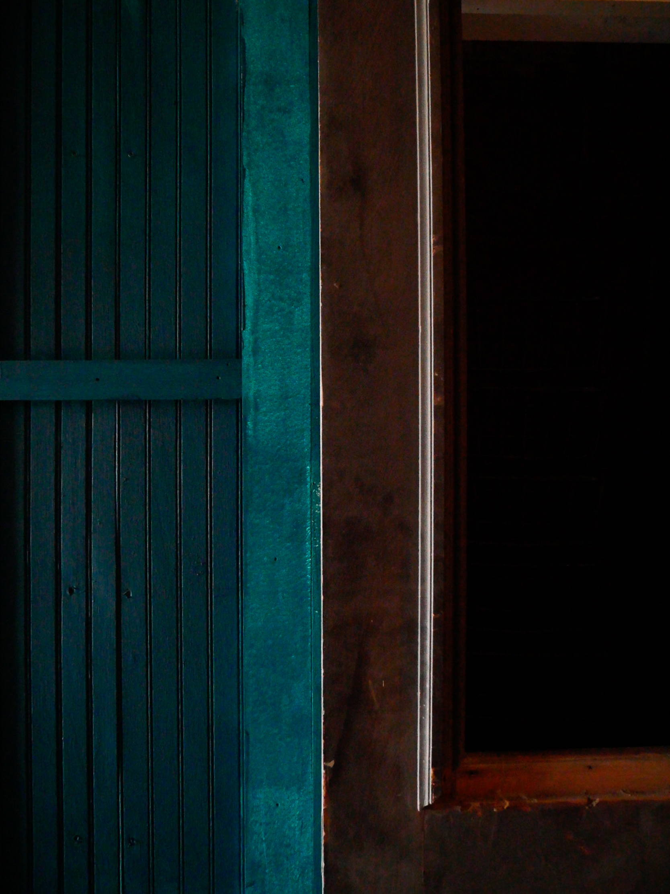

Setting Foundations
Core world rules, tone, geography, culture anchors, and conflict engine so your project stays coherent as it grows.
Lore systems, narrative arcs, faction design, and setting development for creators building worlds with depth and cohesion.
This is the deeper-build lane: I handle a larger share of the hands-on world and narrative creation work.
Core world rules, tone, geography, culture anchors, and conflict engine so your project stays coherent as it grows.
Interlocking factions, values, voice, and motivations that generate natural story pressure and strong role-play hooks.
Story map planning for campaigns, interactive experiences, episodes, or game beats with expandable branching outcomes.
Deliverables can include lore bibles, narrative outlines, timeline docs, and style guides tailored to your team.
15-minute free phone, Zoom, or Discord call to talk through the fit and the best starting lane.
Short 30-minute consult for a lighter worldbuilding question, direction check, or naming pass.
Fast kickoff package for early-stage projects that need a clear world identity.
Expanded world + story architecture for active projects in production.
A few visual textures I use when shaping setting tone, location mood, and environmental storytelling language.



Image note: these are compressed web previews for site performance and storage; original files are higher quality.